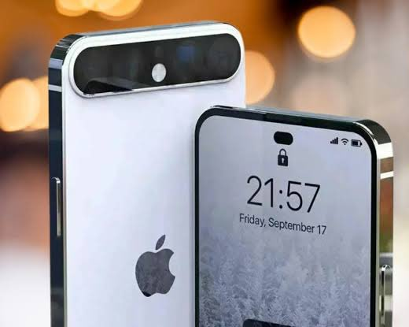

Intel AI and the Olympics
Last week, Intel shared how its AI technology will be a significant part of the Olympics experience.
If Intel pulls this off, it would be a huge boost to its AI efforts. If this doesn't work, it will reflect poorly on Intel.
I've been involved with two prior Olympics tech efforts, one with IBM and the Winter Olympics and the other with Lenovo and the Summer Olympics.
While the Lenovo effort worked out reasonably well for Lenovo, the IBM effort was a train wreck that had little to do with IBM's technology or services and everything to do with the complex nature of the Olympics held in the U.S. that year.
France presents unique challenges given some venue's locations, domestic and foreign efforts to disrupt the event, and the common committee approach to getting things done.
France also has a vastly different legal structure than much of Europe and the U.S., which can make doing a project like this uniquely difficult.
However, if Intel succeeds, AI at the Olympics will make a huge difference to the attendee and athlete experience and make this the most enjoyable Olympics of all time.
Though, given how new generative AI is and the complexity of this project, it won't be a walk in the park.
AI isn't a Good Argument for Basic Income
We're flooded by guaranteed income pilot experiments that offer some promising results,
but don't seem to be moving us any closer to actual federal policy.
Yet findings published today from the largest randomized basic income experiment in the US to date, backed by Sam Altman and OpenAI, should get your notice.
The study, held from November 2020 through October 2023, gave 1,000 recipients $1,000 per month, no strings attached.
It's one of the biggest and longest trials ever run on direct cash giving.
Many other basic income pilots have given people $500 or less, and rarely for more than a year or two.
iPhone 17 Leak Reveals Slim Model and Unified Pro-Motion Feature; New Camera Design Unveiled

In today's fast-paced world of smartphones, everyone eagerly awaits what Apple has in store for its upcoming releases.
While the spotlight is currently on the highly anticipated iPhone 16 series set to debut in September 2024,
the buzz surrounding leaks and rumors about the future iPhone 17 lineup is already captivating tech enthusiasts.
Recently, tipster Ice Universe shared some intriguing details on Weibo about Apple's plans for the iPhone 17 series.
One notable twist is the introduction of the iPhone 17 Slim, which will replace the traditional Plus model.
This addition will expand Apple's lineup to include the iPhone 17, 17 Pro, 17 Pro Max, and the new Slim variant,
aiming to cater to a diverse range of consumer preferences.